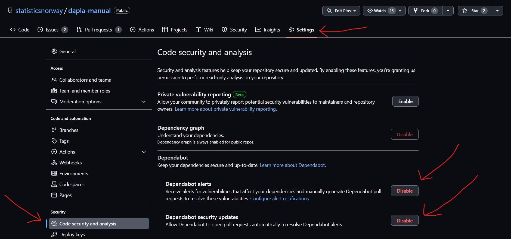

Installere pakker
Python
Installering av pakker er kun er mulig I et virtuelt miljø. Det er anbefalt å benytte poetry til dette. Eksemplene videre tar derfor utgangspunkt i et poetry prosjekt.
Det er mulig å installere pakker med pip. Pakker kan installeres som normalt, hvis man har satt opp og aktivert et virtuelt miljø.
Poetry prosjekt eksempel
Dette eksemplet viser hvordan man setter oppe et enkelt poetry prosjekt kalt test, hvis man ønsker å benytte et annet prosjektnavn må man endre dette i hver av kommandoene.
Sett opp prosjektet:
poetry new testNaviger inn i prosjektmappen:
cd testBruk poetry install for å bygge prosjektet:
poetry installHvis man får en tilbakemelding som denne er prosjektet satt opp korrekt:
Creating virtualenv test-EojoH6Zm-py3.10 in /home/jovyan/.cache/pypoetry/virtualenvs
Updating dependencies
Resolving dependencies... (0.1s)
Writing lock file Installering
For å legge til pakker i et prosjekt benyttes kommandoen poetry add.
Skal man legge til pakken “pendulum” vil det se slik ut:
poetry add pendulumPoetry tilbyr måter å sette versjonsbegrensninger for pakker som legges til i et prosjekt, dette kan man lese mer om her.
Avinstallering
For å fjerne pakker fra et prosjekt benytter man poetry remove.
Hvis man ønsker å fjerne “pendulum” fra et prosjekt vil kommandoen se slik ut:
poetry remove pendulumOppgradere pakker
For å oppdatere pakker i et prosjekt benytter man kommandoen poetry update.
Skal man oppdatere pakken “pendulum” bruker man:
poetry update pendulumSkal man oppdatre alle pakken i et prosjekt benytter man:
poetry update Dependabot
Når man installerer pakker så vil det etter hvert utvikle seg et sett av potensielt kompliserte avhengigheter mellom disse pakkene. Dette skyldes at en pakke kan benytte seg av funksjonalitet i andre pakker, som igjen benytter seg av funksjonalitet i andre pakker, osv.. Hvis noen finner en sikkerhetssårbarhet i en pakke så kan det fikses ved at en ny versjon av den pakken slippes, som igjen kan få konsekvenser for pakker som er avhengig av denne.
I SSB er det tilrettelagt for at alle som versjonshåndterer koden sin på GitHub kan skanne pakkene sine for sårbarheter og nye versjoner av pakker med Dependabot. Dependabot hjelper oss med å finne og fikse sårbarheter og gamle pakkeversjoner. Dette er spesielt viktig når man installerer sine egne pakker.
Det er anbefalt at alle som installerer sine egne pakker i SSB skrur på Dependabot i sine GitHub-repoer. Du kan skru på ved å gjøre følgende:
- Gå inn repoet
- Trykk på Settings for det repoet som vist på Figur 1.
I menyen til venstre velger du Code security and analysis
Under seksjonen Dependabot velger Enable på minst Dependabot alerts og Dependabot security updates, slik som vist i Figur 2.

Når du har gjort dette vil GitHub varsle deg hvis det finnes en kjent sårbarhet i pakkene som benyttes.
Legge til kernel for poetry
For å kunne benytte det virtuelle miljøet i en notebook må man sette opp en kernel. Kernel burde gis samme navn som prosjektet.
Først legger man til ipykernel:
poetry add ipykernelSå opprettes kernel med:
poetry run python -m ipykernel install --user --name testEtter dette er kernelen test opprettet og kan velges for å benytte miljøet i en notebook.
Fjerne kernel
For å fjerne en kernel med navn test bruker man:
jupyter kernelspec remove testDu vil bli spurt om å bekrefte, trykk y hvis man ønsker å slette:
Kernel specs to remove:
test /home/jovyan/.local/share/jupyter/kernels/test
Remove 1 kernel specs [y/N]: yEtter dette er kernelen fjernet.
Sikkerhet
Hvem som helst kan legge til pakker på PyPi, det betyr at de i verstefall, kan inneholde skadelig kode. Her er en list med viktige tiltak som minimere risikoen:
Før man installerer pakker bør man alltid søke de opp på https://pypi.org. Det er anbefalt å klippe og lime inn pakkenavnet når man skal legge det til i et prosjekt.
Er det et populært/velkjent prosjekt? Hvor mange stjerner og forks har repoet?
R
Installering av pakker for R-miljøet i Jupyterlab er foreløpig ikke en del av ssb-project. Men vi kan bruke renv. Mer kommer.
Installering
For å installere dine egne R-pakker må du opprette et virtuelt miljø med renv. Gå inn i Jupyterlab og åpne R-notebook. Deretter skriver du inn følgende i kodecelle:
renv::init()Denne kommandoer aktiverer et virtuelt miljø i mappen du står i. Rent praktisk vil det si at du fikk følgende filer/mapper i mappen din:
renv.lock
En fil som inneholder versjoner av alle pakker du benytter i koden din.
.Rprofile En fil som inneholder informasjon om oppsetting av miljø og alternative.
renv
Mappe som inneholder alle pakkene du installerer.
renv/activate.R En fil som aktivere renv miljø for et prosjekt.
Hvis prosjektet ligger på GitHub, skal filene renv.lock, .Rprofile og renv/activate.R være på GitHub
Nå som vi har et virtuelle miljøet på plass kan vi installere en R-pakke. Du kan gjøre dette fra både terminalen og fra en Notebook. Vi anbefaler på gjøre det fra terminalen fordi du da får tilbakemelding på om installeringen gikk bra heller ikke. For å installere i terminalen gjør du følgende:
- Åpne en terminal i Jupyterlab
- Stå i mappen der du aktiverte det virtuelle miljøet
- Skriv in
Rog trykk enter.
Det vi nå har gjort er å åpne R fra terminalen slik at vi kan skrive R-kode direkte i terminalen. Det omtales ofte som en R Console. Nå kan du skrive inn en vanlig kommando for å installere R-pakker:
renv::install("PxWebApiData")Over installerte vi pakken PxWebApiData fra den R sentral repository CRAN. Dette er en pakke skrevet i SSB for å hente ut data fra vår statistikkbank. Det er også mulig å installere pakker som ligger på SSBs GitHub. Da må vi spesifisere at pakke ligger på ‘statisticsnorway’ område. For eksempel:
renv::install("statisticsnorway/klassR")Pakken klassR er skrevet for å hente ut klassifikasjoner fra SSBs KLASS. Det er en public repository på Github og åpen for alle å laste ned. For pakker som er på et lukket område på ‘statsitcsnorway’ må vi bruke Personal Authentication Token for å installere. Vi kan gjøre dette ved hjelp av funksjonen install_github() i devtools pakken. For eksempel:
renv::install("devtools")
renv::install("getPass")
devtools::install_github("statisticsnorway/fellesr",
auth_token = getPass::getPass())La oss bruke pakken PxWebApiData i koden vår med ved å skrive følgende i kodecelle i Notebooken vår:
library(PxWebApiData)
ApiData("https://data.ssb.no/api/v0/en/table/04861",
Region = c("1103", "0301"), ContentsCode = "Bosatte", Tid = c(1, 2, -2, -1))Når vi nå har brukt PxWebApiData i koden vår så kan vi kjøre en kommando som legger til den pakken i renv.lock. Men før vi kan gjøre det må vi være obs på at renv ikke klarer å gjenkjenne pakker som er i bruk Notebooks (ipynb-filer). Det er veldig upraktisk, men noe vi må forholde oss til når vi jobber med renv i Jupyterlab. En mulig løsning for dette er å bruke Jupytext til å synkronisere en ipynb-fil med en Rmd-fil. renv kjenner igjen både R- og Rmd-filer. For å synkronisere filene gjør du følgende:
- Trykk
Ctrl+Shift C - Skriv inn Pair i søkefeltet som dukker opp
- Velg Pair Notebook with R Markdown
Hvis du nå endrer en av filene så vil den andre oppdatere seg, og renv vil kunne oppdage om du bruker en pakke i koden din. Men for å trigge renv til å lete etter pakker som er i bruk så må du skrive følgende kode i Notebooken eller R Console:
renv::snapshot()Kikker du nå inne i renv.lock-filen så ser du nå at verjsonen av PxWebApiData er lagt til. I bildet under ser du hvordan et arbeidsmiljø typisk kan se ut når man installerer sine egne pakker.

For å installere alle pakker som ligger i renv.lock-filen med riktig versjon kan du skriver
renv:restore()Dette er nyttig om det er nye medlemmer i gruppen som skal kjøre en produksjonsløp utviklet av andre.
Avinstallering
Individe pakker kan fjernes fra library ved remove() funksjonen. For eksempel:
renv::remove("PxWebApiData")For å fjerne fra renv.lock-filen også må du ta en snapshot() etterpå.
renv::snapshot()En annen nyttig funksjon er renv::clean(). Dette fjerner alle pakker fra library som ikke er i bruk
renv::clean()Igjen må du ta en snapshot() for at endringer skal lagres på renv.lock-filen
Oppgradere pakker
For å oppgradere en pakke kan du bruke renv::update(). For eksempel å oppgradere PxWebApiData skriv:
renv::update("PxWebApiData")For å installere et spesifikk versjon av en pakke kan du spesifisere dette med installering med @ og versjonsnummer. For eksempel å installere PxWEbApiData versjon 0.4.0:
renv::install("PxWebApiData@0.4.0")Husk å ta en snapshot() etterpå for å lagre endringer til renv.lock-filen. Det betyr at du og andre kan gjenskape miljø på nytt.
renv::snapshot()